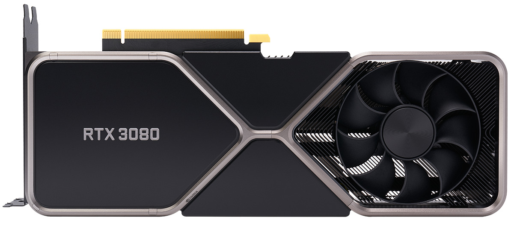
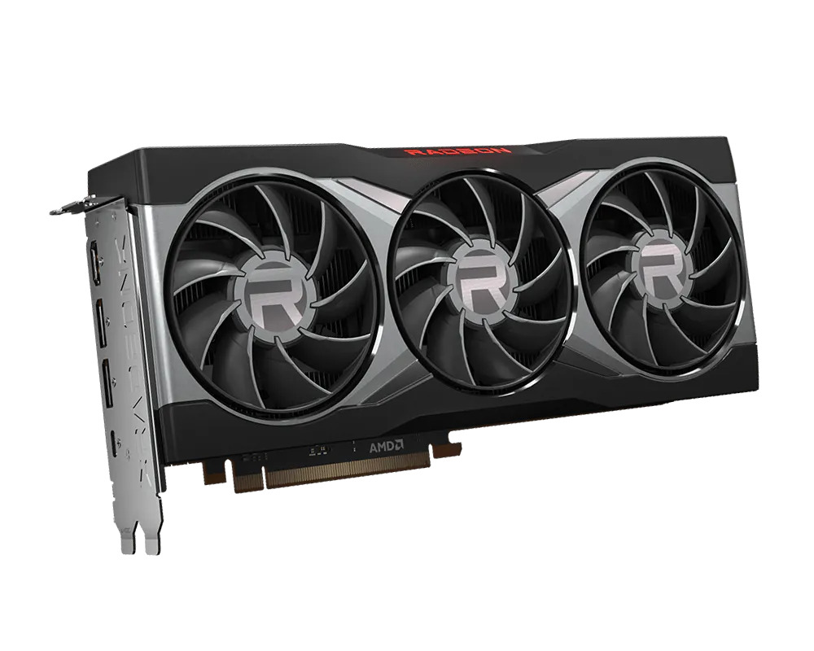
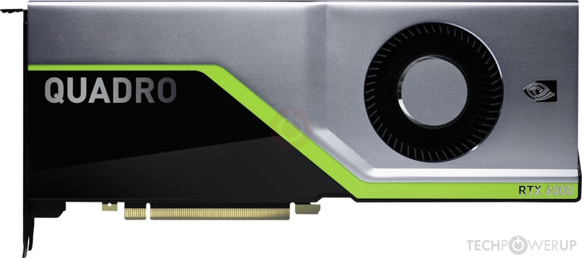
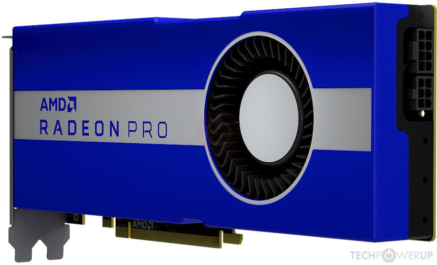
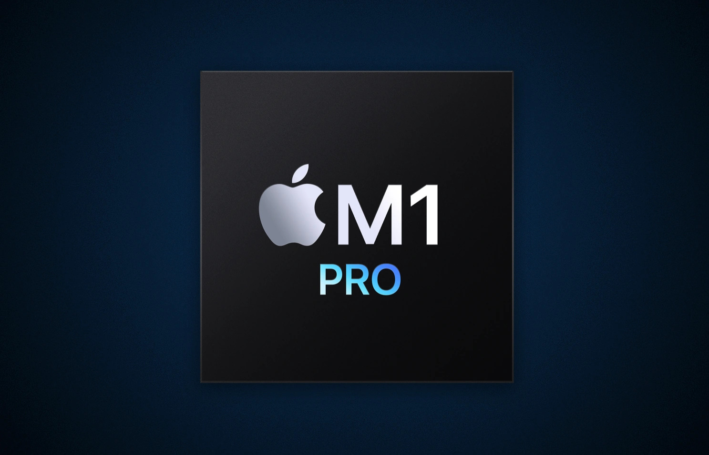

Graphics Processing Units
GPUs are specialized processors designed to handle graphics rendering and parallel processing tasks. Here are some popular GPUs:
GPUs are specialized processors designed to handle graphics rendering and parallel processing tasks. Here are some popular GPUs:




